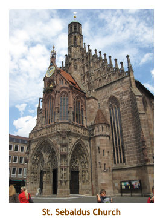
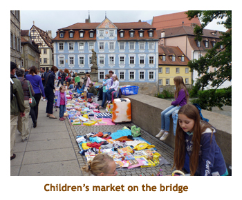
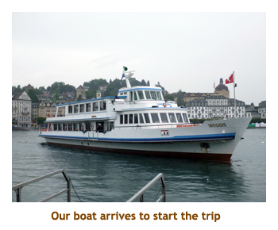
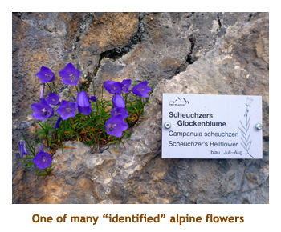
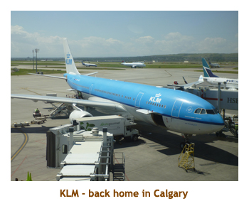

[ Home ] [ Travel ] [ Photography ] [ Pets ] [ Games] [ Rowing] [ Physics ]


Cruising on the River Countess
Travel
Cruises
Past Cruises (Diaries)
Future Cruises
Rogues Galleries
Land Trips
Diaries (Land Trips)
Hawai'i - Big Island - 04'01
Hawai'i - Maui - 05'02
Hawai'i - Big Island - 04'03
Hawai'i - Kaua'i - 09'04
Hawai'i - Big Island - 04'06
Hawai'i - Maui - 04'06
Mainland China - 05'07
Phoenix, Arizona - 12'07
Greek Isles - 05'08
Hawai'i - Kaua'i - 09'08
Hawai'i - Big Island - 09'09
Hawai'i - Maui - 05'12
Hawai'i - Big Island - 04'13
Ireland - 08'13
Mexico - Cancun 11'13
France/Belgium/Lux 07'15
Hawai'i - Big Island - 05'17
England / Wales - 06'17
Hawai'i - Big Island - 09'19
Photography
Cameras
Underwater
Pets
Tara
Blackie
Whitey
Muffy
Ollie
Rusty
Fluffy
Rufus&Dufus
Games
Rowing
Physics
Rating (out of 5): Ship  Food
Service
Itinerary
Food
Service
Itinerary
This diary is a continuation of the preceding Adriatic cruise on the Silhouette. It includes our pre-stay in Nuremberg and our post-stay in Switzerland.
We booked the Rhine River cruise because it fit well with the timing of the preceding ocean cruise, and hit an area of the Rhine River (Nierstein to Basel) that we hadn't been to before. Also, it was on a list of highly discounted (travel agent rates) Uniworld cruises that made it vey affordable. We had done two Uniworld cruises last year (Rhine and Danube) and had really enjoyed them, so this was a no-brainer. Note: Last year Uniworld offered free beer and wine at dinner, while Scenic Tours offered free drinks for both lunch and dinner. This year Uniworld added drinks at lunch while Scenic Tours offered free drinks any time of the day. Maybe next year Uniworld will match them again.
To start it off, after 13 days in 40 degree weather, Nuremberg was 18 degrees and raining!
Man, did that sound good. We really enjoyed our few days of cool and wet before returning
to the low 30's a ways into the river cruise. The river cruise was wonderful. And, as
so often happens when cruising, we met an awesome couple (Wayne and Jean
from Vernon)
who we enjoyed dinner with each evening.
Pre-cruise (July 17 - 20) - A few days in Nuremberg
July 17 - We couldn't find a reasonably priced direct flight from
Rome to Nuremberg, so ended up flying Air Berlin over Nuremberg to Hamburg,
then another flight back to Nuremberg. During our layover in Hamburg airport
we grabbed lunch at a burger joint where we had to pay 0.50 for a small
container of ketchup! We arrived in Nuremberg about 7:00 PM and were pleased
to find that the train stopped right in the airport terminal building. We
did the train to the Hauptbahnhof which was just on the edge of the "old
town". As we disembarked the train, a level below the sidewalks, we were
in a large underground mall. There were several exits up to ground level
all leading to different quandrants of a major intersection. We had no idea
which exit we needed, so picked one at random. Dragging our luggage out into
the sunshine, there was our hotel (Victoria) right in front of us. How lucky
was that? After checking in, we did a bit of a walk about in the vicinity
of our hotel and then headed to bed. The hotel did not have air conditioning
so we had to keep our window open. There were sidewalk cafes and bars around
the hotel so it was a noisy night.

July 18 - The next morning we were up at 7:00 and did breakfast
in the hotel (included). It was to be a cool day with some cloud and some sunny periods.
We spent the day walking around the old city (walled
town). Right next to the hotel was a wall tower surrounded by some "medieval"
craft shops - glass blowing, pewter, stitchery, etc, plus several small
restaurants. We visited the St.
Lawrence Cathedral and Marjorie noticed that there was a free
organ concert at noon in the church.
So, we wandered around the area and then returned at noon for the concert.
It was very good! We stopped
for lunch at Bohm's Herrenkeller Restaurant and had sausages and sauerkraut.
After lunch we explored some church ruins (St. Catherine's) along the Pegnitz
River and then visited the St. Sebaldus Church.
We had done the church the previous year, but it was well worth entering again.
Finally we headed up hill to the far north end of the old town to wander around the
grounds of the old Kaiserburg. We didn't go into the museum but just enjoyed
the views looking over the old town.
On the way back to the hotel we found a Karstadt department store
so we did a bit of shopping there.
Marjorie bought a kitchen knife. We skipped dinner (still full from lunch)
and did some more wandering in the evening.
July 19 - The following day we were up early for breakfast and then hiked across the street to the Hbf and hopped on Tram #5 to the Nuremberg zoo. It was a great zoo with dolphins and sea lions as well as the usual animals. The dolphin show was excellent. It rained a bit as we walked around the grounds. We caught the tram back to the old town and had lunch at the Zum Gulden Stern restaurant. We were told it served schnitzel, but when we got there it wasn't true - they only served sausages and sauerkraut! When I asked the waitress if they had schnitzel she said "Nein!!" as if I had insulted her! We wandered the old town some more in the afternoon. I found a very interesting bookstore, but most of the books were in German. We skipped dinner again for the same reason as the previous day. Those sausages really stick with you.
July 20 - Our final day in Nuremberg started with an early breakfast
and then checking out from the hotel. We headed to the train station for
the next phase of our trip.
Day 1 (July 20) - Boarding in Nuremberg
At the train station we caught the train to the airport. Uniworld provided a shuttle service from the airport to the docks which saved us from having to find transportation from the hotel to the docking area (which was quite a bit out of town). As mentioned before, the train terminus was right inside the airport terminal. Very handy! We met the Uniworld representative at the luggage carousel about 9:45. We had a short wait and then boarded the bus to the river boat dock. We arrived at the dock about 10:30. Our rooms would not be ready until 2:00 PM, so we did a wander around the dockside and then headed into lunch. On past cruises we were offered only snacky type food when we boarded. However this cruise was diffferent in that it was also marketed as a 14 day cruise from Vienna to Basel (we were a 7 day from Nuremberg to Basel). About 60 out of our 128 passengers had boarded in Vienna, so this was just another port to them. Hence, the ship offered a full lunch today.
After lunch Marjorie did a laundry and I unpacked our stuff in our room. Then I tried
out the small gym - they had a water rower which is quite strange. At 4:00 PM we had
a muster drill and then the captain introduced his team. Dinner was at 7:00 and I had rack
of lamb.
Day 2 (July 21) - Return to Bamberg
Our first stop of the cruise was in Bamberg. We had stopped here last year and
the tour was essentially the same, but seeing it a second time was well worth it. We
had breakfast and then jumped in the bus at 8:45 for the 15 minute drive into the
city. We parked and walked into the old town area. The bridge crossing the Werkkanal
was lined with blankets where children were displaying old toys that they were selling
(sort of a garage sale for kids). We went up a main street and into
the huge square (Dom Platz) surrounded by the Bamberg Dom and the Bishop's Palace.
There was a wonderful view of the city from here. We didn't go into the Palace but
did walk through the extensive gardens.Then we were given time on own own until
12:00 noon.
|  |
We backtracked to the Dom and had a look inside. We wandered around
the main floor and took some side steps into the crypt. It was very interesting. We
had seen a large number of bicycles parked outside and a cycling group marched
through the church playing band instruments. They all had orange t-shirts on. They must
have been a cycling band or a band-cycle or something like that! After leaving the Dom
we wandered down the hill to the old city hall building that is smack in the middle of the river.
In the 1300's the Bishop wouldn't give any land for the city hall to be build on, so the citizens
built it in the river. A bit further on was the bus meeting point where we shuttled back to the ship.
Lunch was at 1:00 and then we read our books for a while. I went to the gym at 4:00.
Tonight was the Captain's welcome dinner. By shear fluke, Marjorie and I were one of three
couples invited to join the captain at the table. After the afternoon cocktail party our group
made a grand entrance into the dining room and sat at the head table. The meal and the
service were excellent. We were finished at 9:30, so read for a while then went to bed.
Day 3 (July 22) - An afternoon in Rothenberg (from Wurzburg)
Today we got to sleep in again as we had no morning excursion. In fact,
we were sailing until noon. We had a leisurely breakfast and then went up
on the top deck. It was blue sky, sunny and warm on deck. The scenery was
wonderful - vinyards and villages. We arrived at Wurzburg about 12:00 PM.
We had lunch and then boarded the bus at 1:00. Although we were docked at
Wurzburg, we were headed to Rothenberg about 1.5 hours away. We did a walking
tour of the old town, including visiting several cathedrals. We were given
some time on our own to wander some more and check out the shops. It was
a lovely sunny and warm afternoon. We all met again in the main square at
5:00 to walk back to the bus. We were back at the ship by about 6:30. Dinner
time was moved to 7:30 so that they could squeeze in the daily lecture on
the following day's activities. For dinner I had sauerbraten. It was very
good. The entertainment was a group from Miltenberg called The Headliner
Show Band. We had seen this same band a year ago and really enjoyed
them. It was the identical program again, but their exuberance and musical
skills made it another wonderful concert.
Day 4 (July 23) - A morning in Wurzburg

This morning we woke up and we were still in Wurzburg. Yesterday we did
Rothenberg, today we would do Wurzburg. It was another hot sunny day. We
had breakfast and then boarded the bus at 8:45 for the short drive to Wurzburg.
Our first stop was at the Bishop's Residenz . We were given a guided tour
through the palace, which was in a baroque style. The "conservatory" had
an amazing painted ceiling. After the palace tour we headed out the backside
of the palace to the beautiful gardens. We had a short time to wander the
gardens and then we re-assembled to walk into the old town. We passed some
beautiful churches and interesting medieval buildings. We ended our tour at
the famous bridge across the Main River. The bridge features a number of statues
of saints relevant to the city, including St Kilian the patron saint of Wurzburg.
From the bridge we climbed down some stairs to the river bank and walked
along the quay back to the ship.
We were on the ship by 12:00 PM, just in time for lunch. There was an optional
tour offered for a 1:00 PM bus trip to Weikersheim Castle. However, we had done
that trip last year and decided to not repeat it this time. As the tour bus was leaving
for Weikersheim,
our ship set sail with the rest of us and we would pick up the tour group further
down the river at Karlstadt. I sat up on deck for a while watching the scenery, but
it was really hot (30 degrees plus) so I made a trip to the gym while Marjorie
did a laundry. Either we sailed faster than anticipated (locks can be fast or slow)
or the tour group was delayed but we arrived at the little village of Karlstadt
at 5:00 PM, way ahead of the bus. As a result, we were given 45 minutes
to explore the village. It was a wonderful. Karlstadt was smaller, but equally
interesting to Bamberg or Wurzburg without the tourist crowds. We walked
the entire length of the main street and even had time for a little grocery shopping
at Kupsch. I think Marjorie bought chocolate bars there. The bus arrived about 5:45
and we all reboarded the ship. It was an "Epicurian Dinner" tonight and I had
a spaetzle dish. Yummy!
Day 5 (July 24) - The village of Miltenberg

Today was the final port that overlapped with our cruise from the previous year.
We had really enjoyed Miltenberg before, so were quite looking forward to it again.
We were up at 7:00 and had breakfast. The walking tour into Miltenberg started at 9:00.
We had a guided tour for about an hour, doing the main street and then the town square.
Then we were given an hour on our own to wander around. We walked further along the
main street and came to a working brewery with an interesting shop front.
Then we decided to pop into
a cathedral where we could hear the sound of a pipe organ. It must have been either
someone tuning the organ, or practicing, as he played short passages from various
pieces. We really wished that he would play a whole piece. We wandered around some
more of the town and then joined the rest of the crowd to walk back to the ship.
We hit the ship right at noon, in time for lunch and then sailing at 1:00 PM. After
lunch I read for a while on the upper deck, but finally had to retreat as it was so
hot there. The captain gave a talk about river cruising at 2:30, and then there was a
black forest cake demo at 3:30. That made me hungry so I decided to go to the gym
for a spell on the water rower. We read for a while and then attended a "Heritage
Club" cocktail party. This was for people who had cruised before with Uniworld, sort
of a frequent sailor thing. Finally, at 6:30 we had the daily port talk describing
tomorrow's activities. For dinner I had the seafood linguine (with no mussels).
The entertainment was a fellow (Tomy Temerson) with a zither. He played
a wide range of musical selections and was absolutely marvelous!
Day 6 (July 25) - The wine region of Nierstein
Sometime after leaving Miltenberg yesterday (near Mainz), the Main River flows into the Rhine River. Here we
turned south sailing up the Rhine River towards Basel. This section of the Rhine was new to us. This morning
we were docking in Nerstein, the village that had produced some of our favorite white wines. We had a decision
to make as Uniworld offered a choice of two excursions for the day - a half day wine tour of Nierstein or a full day trip to
Heidelberg. We had originally thought we would do the trip to Heidelberg. However, Rick Steves kind of panned
the town as being packed with American tourists, it was a full day tour with several hours "on your own" and it was
forecast to be a very hot day. So, we chose the easier Niertsein tour and enjoyed it very much.
We were up at 7:00 and had an early breakfast. The Heidelberg group headed off at 8:30 while us
Niersteiners departed later at 9:00. Several tractors with trailers were parked on the dock. The trailers
were open wagons with a canvas roof, sideways bench seats and a plank table with holes to hold
the tasting glasses.
 |

As soon as we boarded the trailers (about 12 people to a trailer), our driver handed
out tasting glasses and opened several
varieties of wine. After explaining each wine to us, he left it up to us to pour our own
as we left the dock. We drove through the little village of Nierstein and then headed up the hill on
a twisty gravel road through the vinyards. It became clear why there were holes for
the glasses. It was bumpy! Trying to drink was tough enough, trying to pour was
outright dangerous! When we got to the top of the vinyard we stopped at a beautiful rest area
that had a wonderful view of the river valley below. There we were given a snack bag with
delicious bread and a weiner, and tasted another series of wines. Finally we all reboarded
the trailers and headed back to the ship. We arrived onboard at 11:30, in plenty of time for lunch
(at 12:00) and sailaway (at 12:15). After lunch I read for a while on the top deck. Then I spent
an hour or so talking to a friend from the past who was travelling with her daughter.
We had struck up a conversation earlier in the
cruise and it turned out that she and I had gone to the same elementary and high schools in
New Westminster, one grade apart (we were actually the same age!). On a river cruise in
Germany, with only 120 passengers, what's the chances of that? Anyway, we didn't
really know each other directly, but had lots of mutual friends and experiences. It was
so nice to exchange memories (of 45 years ago!!).
We stopped in Manheim to pick up the Heidelbergers about 5:30. We were in an industrial
area of Manheim, so there was no chance to walk around a bit. We had a
talk on tomorrow's activites then dinner at 7:30. I had pork tenderloin. The
entertainment at 9:30 was Liar's Club with three of the crew members. They did a
really good job of confusing us and were often hilarious.
Day 7 (July 26) - A peek into France - Strasbourg
Today was our final full day in port. The Rhine River creates the border
between France and Germany, so on the starboard side was France and
on the port side was Germany. Our final stop was on the French side in the city
of Strasbourg. We were up early and had breakfast. I should mention that
breakfasts have been excellent on board - it's served buffet stye with a guy
doing made to order omelettes or eggs. Our tour was at 8:30 and we were
met by a canal boat just in front of our boat. A single canal boat held the lot of us.
We spent about 1.5 hours touring through the canals of Strasbourg. There
were a number of modern buildings there to do with the European Union -
including the Palace of Europe and the International Institue of
Human Rights. We also cruised by the old town area with lots of
medieval buildings and old stone bridges. It really was a beautiful city.
We finished our canal tour and docked near the huge Strasbourg Cathedral.

|
From here we continued with a walking tour in the area of the cathedral.
When we reached the cathedral the tour ended and we were given some
time on our own. We went inside the cathedral and checked out the paintings
and woodwork, and the huge pipe organ. Then we walked back to the shuttle
bus area and walked along the canal. We had the choice of three shuttles
back to the ship, at 1/2 hour intervals and decided to catch the early one (11:15).
Lunch was delayed until 12:30 so that the later shuttles could make it
in time. For the afternoon we read, wandered and then packed our suitcases.
We coudn't pack everything as we needed clothes for dinner still.
There was a Captain's Farewell Cocktail Party at 6:00. This time
Marjorie and I didn't get selected to sit at the captain's table. For dinner I had
the Chateaubriand which was excellent. After dinner we finished our packing
and went to bed.
Day 8 (July 27) - Disembarking in Basel
Today was our final port - time to leave the ship. We arrived in Basel
very early. Basel is just into Switzerland, where Switzerland, France and
Germany all converge. This corner of the small country is mainly German
speaking. We were up at 7:00 for breakfast. After eating we packed the remainder
of our stuff and we were ready to leave. We put our bags in the hall and
vacated our room at 8:30. We located our dinner mates in the lounge and
wished them goodbye. They were meeting their daughter who was doing a stint
in Switzerland. We located our bags on the dock and then headed off towards
the tram that would take us to the train station. It was about a half a
mile to the tram stop but seemed longer as we dragged our bags. We were
in an industrial area of the city with no ATM's around, so we had no Swiss
Francs (CHF). The tram ticket machine of course only took CHF, so we boarded
tram #8 without tickets and hoped we wouldn't get caught. We didn't!
It was about a half hour trip (including stops) to the Hauptbahnhof.
As we discussed where we would be getting off, the fellow in the seat behind us
piped up. He had lived in Basel for many years, but spoke perfect English
with a Scottish accent. He pointed out all the sights to us plus explained where to
get off for the train station. It was an interesting drive and I was disappointed
that we wouldn't have any time to explore the town of Basel. That would have to wait
for a future visit! We found the train station and hauled our luggage inside.
It was 9:15. Now we just had to find our way to Luzern.
As Marjorie queued up to buy our tickets to Luzern, I spotted my high school
friend and her daughter. They were going to Zermatt to explore the Matterhorn.
We didn't have to wait long for the 10:04 train. They're always on time!
We only had one stop along the way - in Olten. Finally, at 11:00 AM, we arrived
in Luzern.
Post-cruise (July 27 - 29) - Two days in Luzern
July 27 - As we exited the train station in Luzern, we could see
our hotel in the distance. It was across a bridge and about a block along
the Reuss River. A 10 minute walk at most. The Hotel des Alps was right
on the river, although our window faced the city side. It was about 11:30
as we checked in and turning out to be a warm day (high 20's). Our first
order of business was to find a grocery store to get some Coke and juices,
then have lunch. The grocery store was a Co-op, the same general idea as
our local Co-ops. Then we stopped at the Einhorn restaurant, named after
the local beer. I had pizza and an Einhorn draft. We spent the afternoon
wandering around the old town. The temperature rose to 32 degrees, so it
was very warm. Our first destination was the park with the "Dying Lion"
war memorial honoring the Swiss Guard who were massacred during the French
Revolution. Leaving the park we walked through the old town area.
The buildings were beautiful, with many of them adorned with
painted murals and designs.
Just in front of our hotel was the famous Kapell-Brucke
(Chapel Bridge) so we had to check it out. There were hanging baskets of
flowers along both sides of the bridge and the rafters held a series of
paintings (like the walkway in the Summer Palace in Beijing). There were
several bridges along the river and I think we did them all. Then we walked
up a steep hill which took us to the still standing city wall. We climbed
up one of the several defensive towers which gave us access to a walkway
along the top of the wall. The views from the wall were amazing, looking
out over the city and lake. The walkway took us through 4 or 5 towers until
we had to clamber down to the ground again. As we hiked down the hillside
to the roadway, we past some highland cattle in a field. We walked back
towards the hotel, arriving at 4:30. We consumed some of our drinks we had
purchased earlier. For dinner we headed back to the Co-op store where they
had a buffet restaurant on the second floor. I had schnitzel and veggies.
We spent the evening wandering around the town. It turned out that our hotel
was like the one in Nuremberg - no air conditioning. We had to keep the window
open so it was a bit noisy.

July 28 - Today we had signed up for "Golden Circle Tour" through the hotel.
This was a multi-transport tour that would take us up the top of Mount Pilatus. When we
woke up, it was cool and rainy. Oh, for yesterday's weather!! However, the rain didn't last
long and, although the sun never did shine, the clouds were very high. We had breakfast
at 8:00 and then packed our warm clothes in our backpacks ready for the tour. We walked
across the bridge to the boat dock, right in front of the main train station. The ship arrived
on schedule at 9:40 and we sailed off on the Vierwaldstattersee (Lake Lucerne). We
made several stops to pick up and let off passengers in various small villages,
and passed under a bridge
to the Alpnacher See. Our final stop was at the village of Alpnachstad. The
boat trip had taken about 90 minutes. There we left the ship
and walked across the street to the Pilatus Bahn (the
world's steepest cog-wheel train, built in 1889). The
train consisted of 4 rail cars that independently climbed the mountain track.
Each car held about 30 people. The cog-wheel track was pitched at 42 to 48 degrees,
and the trip lasted 40 minutes, ascending to about 7,000 feet. The view was
really amazing as we chugged up the mountain. We reached the summit of Mt. Pilatus
at 11:30.
We exited the train car and walked up some stairs to a huge outdoor platform with a hotel at either end.
It was quite cool (about 8 degrees) and a bit breezy so we put on our sweatshirts.The
view was awesome, looking down either side of the mountain. We could hear some
music sounding like French horns, and walked over to the second hotel
(Pilatus-Kulm) where two
guys were playing their alphorns. It was really wonderful to hear the Swiss music
echoing around the mountain top! There were several walking paths at the peak,
maybe 2 miles in total length. We did most of them, including the longest trail cut into the edge
of the steep mountain. That was eerie feeling! All along the trail were various
alpine flowers (maybe 30 or 40 varieties), most identified by name plaques.
We had brought some drinks and cookies in our backpacks, so we stopped
at a bench along the trail to eat our snack and were soon joined by a group
of yellow-beaked crows. We spent about two hours altogether
on the mountain top and then headed back to the first
hotel to catch the gondola ride back down the mountain.
|  |
It was about 1:30 when we arrived at the cable car entrance, just below the hotel.
The cable car went down a diffent side of the mountain than the cogwheel train, so
we would have a different view. The cable car route was in two segments. The first
segment was in a large gondola car that held about 40 people, and the trip lasted
just about 5 minutes. We exited at a mountain theme park with a toboggan run and
zip-lining. We checked out the park for a bit and then resumed our trip down. The
second segment was in smaller cable cars that held only 4 people. It was a 25
minute trip down to the base of the mountain, to the village of Kriens. We exited the
cable car and set off for the bus connection that was about a half mile away. As
we wandered through the village, we came upon a woodworking shop. We went inside
and a father and son (I presume) were working away on an alphorn. They took the
time to talk to us and explained how they made them. Very interesting. We got to the
bus stop about 2:30. The bus took us to the train station which is where we
began our trip in the morning. I should mention that you can purchase your ticket to
do the circle trip in either direction - starting or ending with the boat on the lake.
We were back to the hotel at 3:00, so dumped our backpacks and did another wander through the old town. We visited the Bercherer jewelry shop which had a four story high "ball" clock - the worlds largest. Then we headed to a Hug bakery / restaurant for dinner. I had schnitzel (again) and Marj tried the raclette. Afterwards we wandered back to the hotel in the rain. We had pretty well done the town by now so just settled in for a read for the evening.
July 29 - We had originally planned to stay for 3 nights in
Lucerne and just overnight in Zurich
before our flight home. However, we felt we had done Luzern and were reading up
on things to see and do in Zurich, so we decided to leave Luzern a day early and
instead spend more time in Zurich. We were up at 7:00 and it was cool and raining.
We did the breakfast buffet then grabbed aour luggage, checked out and headed
across the bridge to the train station. Marjorie bought our tickets and we boarded
the train to Zurich.
Post-cruise (July 29 - 31) - Two days in Zurich, then home

July 29 - The train took us to the Hauptbahnhof (main train station)
in Zurich. We were staying in an area some distance away from the downtown
so had to switch to another train out to Oerlikon. It was only two stops away and
took maybe 10 minutes. Our hotel (Swissotel) was right across the street
from the O. station. We checked in and then wandered around the immediate area.
It was a commercial area of town, with nothing of historical significance. We found
an Italian restaurant (the Santa Lucia) and had a wonderful lunch. After lunch,
we crossed to O. station and took the train back to the Hbf. The Zurich old town was
only a couple of blocks away. We spent the afternoon wandering through the old town
visiting cathedrals and taking in the medieval architecture. The bus service included
a ferry on Lake Zurich, so we hopped on the ferry and did an hour long ride to several
villages on Lake Zurich, then up the canal to the Hbf. We trained back to O. station
and picked up some snacks for dinner from a nearby grocery store. After
wandering the area a bit more, we checked out local tours advertized at the hotel.
One was a Greyline bus tour to "Heidiland" and Liechtenstein. It looked
really good so we bought our tickets for tomorrow. A big benefit of the
Swissotel was that it had air conditioning and was QUIET!!
July 30 - Marjorie had gotten a great TA price on the hotel, but
it didn't include breakfast which was $35 each. No way we were paying that,
so we went to the grocery store and picked up some stuff there. The forecast
was for cloud and scattered showers, but we lucked out - no rain and several
extended sunny periods! We hopped on the train to the Hbf and found the
Greyline bus lot about a block away. We were an hour early for the 11:00
tour, so we claimed the front seat with our backpacks and headed off for
a walk along the canal. We were back at the bus (which was now half full)
near to 11:00 and took our front seats. The bus was a combination of two
tour groups - ours, and a shorter one that was only doing a city tour. We
headed off to see the major sights of Zurich. The parts of the new city
were interesting, but the tour through the old town was kind of a repeat for us.
We made one stop to tour through the Zurich Cathedral and see the stained
glass windows by Marc Chagall. Then we let off the city tour group who were
doing a walking tour of the old town. Our bus was then only 1/3 full.
The rest of us were taken along the shores of
Lake Zurich to the beautiful "Rose Garden" village of Rapperswil. There, we
did a walking tour of the village, visiting the cathedral, castle
monastery and rose gardens.
The castle had a large grassy area where pet deer were roaming. Next
to the castle was the Capuchin Monastery with another large rose garden.
Then we were
given lunch time on our own. We had a cheese pie at an outdoor restaurant.
At 12:30 we boarded the bus and continued east, past the end of Lake Zurich,
to a mountainous area called "Heidiland" and the village of Maienfield.
This is where the author of the
Heidi series (Johanna Spyri) lived and based the books upon. Sort of like
Lucy Maud Montgomery and Anne
of Green Gables in Cavendish, PEI. We drove up the hillside to some historic
buildings. It was very typical rural Switzerland - green pastures, alpine
buildings and lots of sheep and cows. We were given an hour to wander
through the area which included a paddock of friendly goats. At this point, the
sun was poking through the clouds and it was getting quite warm. We
gathered back at the bus again, and headed north towards the tiny country
of Leichtenstein.
Leichtenstein, like San Marino, has no border control and so it is not obvious
when you are actually entering the country. Our guide pointed out where the control
booths used to be, so we had some idea where the transition occured. By now it
was blue sky, sunny and hot. The country consists of a few small villages, and
we drove to Vaduz, the largest (and the Capital). The village was a mix of the
very modern and the very old. We were given an hour to wander around. There
was artwork and sculpture everywhere. Embedded in the sidewalks were huge
images of postage stamps (a major source of income for Leichtenstein).
There were two postage stamp and coin museums. There was even a Marklin
store with the original German edition of many Eurogames we often play
and, of course, hundreds of model trains.
The main street was fascinating and everything was very clean. The whole
feel to it was very different than that of Switzerland. Our wander time
was up so we reboarded the bus and said goodbye to Leichtenstein. It was a
1.5 hour drive through the countryside back to the Hbf, arriving about 6:00 PM.
We trained back to the hotel and then went for dinner at the Santa Lucia
restaurant (again!). We wandered a bit in the evening sunshine and then
watched the Olympics.
 July 31 - Today was our final day of the trip and we're heading home! It was sunny and in the mid 20's. Once again we skipped the $35 breakfast and instead had some goodies from the grocery store. We headed across the street to the train station at 7:30. It was only one stop away to the airport! Once again, with European efficiency, the train stopped right in the Zurich Airport terminal building. We were in plenty of time for our 9:25 flight. Our first leg was to Amsterdam. As we were landing there, we noticed a KLM B-737 Cityhopper plane parked on the roof of the terminal building! What was going on there??? We had a fairly short connection time so were soon in the air again heading to Calgary. We landed about 1:30 PM and Chrissy got off work a bit early to take us home just after 2:00. All was OK at home and all 5 kitties were glad to see us again. What a wonderful trip it had been - Italy, San Marino, Balkans, Malta, Germany, Switzerland, Leichtenstein. Definitely right up there with all our other travels.